사회조사분석사-2급 (2003-03-16 기출문제)
1과목: 조사방법론 I
1. 여러 질문문항들이 동일한 응답범주를 갖고 있을 경우 사용하는 질문기법은?
- 여과질문(filter question)
- 행렬질문(matrix question)
- 겹치기 질문(double-barreled question)
- 깔때기식 기법(funnel technique)
(정답률: 47%)

2. 외적 타당도에 영향을 미치는 요인은?
- 자료수집과정에서 관심을 가지는 독립변수 이외의 다른 사건이 영향을 미칠 수 있다.
- 연구의 대상인 개인, 집단, 지역공동체 등의 자체 내조건의 변화가 발생할 수 있다.
- 조사결과에 나타난 차이가 측정도구, 표집단위의 불안정성으로 인해 발생할 수 있다.
- 표집과정에서 특정한 속성의 집단이 차별적으로 선별되어 대표성의 문제가 발생한다.
(정답률: 알수없음)
3. 리커트(Likert)척도와 같은 의미로 사용되는 것은 다음중 어느 것인가?
- 총화평정척도
- 누적척도
- 비율척도
- 단일차원척도
(정답률: 알수없음)
4. 만약 연구자가 한 척도를 구성하고 있는 문항들에서 많은 결측 자료를 가지고 있을 경우 각 사례로부터 얻을 정보의 양을 극대화하기를 원한다면 결측 자료를 처리하기 위해서 어떤 방법을 선택해야 하는가?
- 결측 자료를 가진 사례들을 분석에서 제외시킨다.
- 응답자들이 답한 항목들로부터 얻은 평균 점수로 결측 자료를 대체한다.
- 결측 자료에 대해서는 총체적 자료로부터 얻은 평균 점수를 준다.
- 어떠한 수정없이 결측 자료를 분석에 포함시킨다.
(정답률: 50%)
5. J. S. Mill이 제시하는 인과관계 추론의 조건이 아닌 것은?
- 공간적 일치의 원칙
- 동시변화성의 원칙
- 차이성의 원칙
- 공통성의 원칙
(정답률: 알수없음)
6. 표준오차(standard error)에 영향을 주는 요인이 아닌 것은?
- 표준편차
- 표본추출 방법
- 모집단의 특성
- 표본 크기
(정답률: 46%)
7. 유의표집(purposive sampling)에 대해 맞게 설명한 것은?
- 모집단의 특성에 대한 가정을 하지 않는다.
- 확률표본추출법의 일종이다.
- 연구자가 자신의 연구능력과 사전지식을 활용하여 응답자를 고를 수 있다.
- 표본의 대표성을 보장할 수 있다.
(정답률: 75%)
8. 교육수준은 소득수준에 영향을 미치지 않지만, 연령을 통제하면 두 변수사이의 상관관계가 매우 유의미하게 나타난다. 이때 연령과 같은 검정요인을 무엇이라 부르는가?
- 억제변수(suppressor variable)
- 왜곡변수(distorter variable)
- 구성변수(component variable)
- 외재적 변수(extraneous variable)
(정답률: 65%)
9. 표본조사의 이점이 아닌 것은?
- 비용과 시간을 절약할 수 있다.
- 다량의 정보를 확보할 수 있다.
- 비교적 넓은 지역의 많은 조사대상자를 포괄할 수 있다.
- 표본오차와 비표본오차를 줄일 수 있다.
(정답률: 알수없음)
10. 전수조사 대신 표본조사를 하는 이유가 아닌 것은?
- 경비를 절감하기 위해
- 정확도를 높이기 위해서
- 표본오차를 줄이기 위해서
- 광범위한 주제에 걸쳐서 연구하기 위해서
(정답률: 34%)
11. 측정에 대한 올바른 설명이 아닌 것은?
- 관찰된 현상의 경험적인 속성에 대해 일정한 규칙에 따라 수치를 부여하는 것이다.
- 이론과 경험적 사실을 연결시켜 줌으로써 이론을 경험적으로 검증해주는 수단이다.
- 사회과학에서는 대상이 갖는 속성 자체보다는 속성의 지표를 측정하는 경향이 있다.
- 사회과학에서 태도와 동기 등은 직접 관찰가능하기 때문에 측정하기가 용이하다.
(정답률: 알수없음)
12. 현직 대통령의 인기도를 측정하기 위해 0부터 100까지의 값 가운데 하나를 제시하도록 하였다. 0은 가장 싫은 경우, 100은 가장 만족한 경우로 정하였다. 이것은 다음 중 어느 척도에 해당하는가?
- 명목척도
- 등간척도
- 서열척도
- 비율척도
(정답률: 50%)
13. 개념타당성은 심리학적 특성의 측정과 관련된 개념으로 행동과학의 연구에 특히 중요하다. 다음 중 개념타당성의 구성요소가 아닌 것은?
- 이해타당성
- 표면타당성
- 집중타당성
- 판별타당성
(정답률: 60%)
14. 층화무작위표본추출법과 군집표본추출법에 대한 다음 설명 중 틀린 것은?
- 확률표본추출법이다.
- 모집단의 모든 요소가 추출될 확률이 동일하다.
- 표본추출의 단위가 모집단의 요소이다.
- 군집표본추출법은 층화무작위표본추출법과는 달리 가급적이면 군집을 이질적인 요소로 구성한다.
(정답률: 알수없음)
15. 질문지 개별 항목의 내용을 결정할 때 꼭 고려하지 않아도 되는 것은?
- 응답자가 정보를 제공해 줄 수 있는가?
- 응답자가 필요한 정보를 알고 있는가?
- 한 문항으로 충분한가?
- 장래 주요 관심사로 예상되는 내용인가?
(정답률: 알수없음)
16. 다음 중 확률표집법으로만 이루어진 것은?
- 단순무작위표집법-할당표집법
- 층화표집법-간편표집법
- 단순무작위표집법-층화표집법
- 집락표집법-할당표집법
(정답률: 82%)
17. 설문지 수집 후 검토하는 과정에서 제외시켜야 할 설문지들이 있다. 다음 중 분석에서 제외되어야 할 설문지가 아닌 것은?
- 설문지의 많은 부분에 대한 응답이 없는 경우
- 설문지의 페이지가 뒤죽박죽으로 섞여있는 경우
- 설문지의 대부분에 한 번호만을 응답한 경우
- 설문지의 일부가 분실된 경우
(정답률: 알수없음)
18. 신뢰도와 타당도에 영향을 미치는 요인이 아닌 것은?
- 조사도구
- 조사환경
- 조사목적
- 조사대상자
(정답률: 81%)
19. 신뢰도 조사방법 중 설문지 혹은 시험지의 문항들을 두 부분으로 나누어서 각 부분에서 얻은 측정값들을 두 번의 조사에서 얻어진 것처럼 간주하여 그 사이의 상관계수를 구하여 검사하는 방법은?
- 내적합치도 방법
- 반분법
- 재조사법
- 동형방법
(정답률: 70%)
20. 태도척도에서 부정적인 극단에는 1점을, 긍정적인 극단에는 5점을 부여한 후, 전체문항의 총점 또는 평균을 가지고 태도를 측정하는 척도는?
- 서스톤척도(Thurstone scale)
- 리커트척도(Likert scale)
- 거트만척도(Guttman scale)
- 의미분화척도(어의차이 척도)
(정답률: 59%)
21. 조사대상을 파악하기도 어렵고 접근도 어려울 때 또는 모집단 추출틀의 작성이 곤란할 경우에 사용되는 방법중에 서 해당집단에 속하는 사람들을 소개받아서 조사를 진행하는 이 방법은?
- 할당추출법
- 판단추출법
- 간편추출법
- 눈덩이 추출법
(정답률: 64%)
22. 다음 검사-재검사 신뢰도에 대한 설명으로 맞는 것은?
- 홀수문항과 짝수문항의 응답을 비교하는 방식으로 수행하기도 한다.
- 내적 일치도를 측정하는 신뢰도 측정방법이다.
- 검사-재검사 간격이 너무 짧으면 기억효과 때문에 신뢰도가 낮아진다.
- 동일한 문항을 반복해서 측정하는 것이다.
(정답률: 알수없음)
23. 리커트 척도(Likert scaling)에 있어서 가장 중요한 요소는 무엇인가?
- 문항간 내적 일관성
- 문항의 재생가능성
- 척도의 용이성
- 척도의 누적가능성
(정답률: 39%)
24. 면접조사시 비교적 인지수준이 낮은 응답자들은 면접자의 생각이나 지시에 무조건 동조하게 될 가능성이 높은 것은 어떤 효과 때문인가?
- 1차정보효과
- 응답순서효과
- 동조효과
- 최근정보효과
(정답률: 70%)
25. 사회조사분석에서 척도를 사용하는 목적으로 가장 옳지 않은 것은?
- 사회현상은 우리가 관찰하는 것보다 훨씬 복잡한 면이 있다.
- 사회현상에 대한 질적 측정값을 제공하여 통계적 조작으로 불가능한 변수의 심층을 이해하도록 한다.
- 척도는 여러개의 지표를 하나의 점수로 나타내어 자료의 복잡성을 감소시킨다.
- 척도는 측정의 신뢰도를 높이는데 기여한다.
(정답률: 알수없음)
26. 응답자의 대답이 불충분하거나 모호할 때 추가질문을 통해 정확한 대답을 이끌어내는 면접조사상의 기술은?
- 심층면접(in-depth interview)
- 래포(rapport)
- 투사법(projective method)
- 프로빙(probing)
(정답률: 알수없음)
27. 체계화된 자료가 많지 않고 통계적인 모형을 통한 분석이 어려울 때 해당 분야의 관련 전문가를 대상으로 의견을 구하고 종합적인 방향을 전망하는데 목적이 있는 것으로, 1차 조사에서는 개방형 질문을 2차 조사에서는 폐쇄형 질문을 주로 사용하는 사회과학상의 조사방법은?
- 파일럿조사(pilot survey)
- 패널조사(panel survey)
- 델파이조사(delphi survey)
- 집단조사(group survey)
(정답률: 55%)
28. 다음 중 개방형 질문(open-ended questions)의 장점은?
- 표준화되어 있어 비교가 가능하다.
- 자료처리 하는데 편리하다.
- 탐색적으로 살펴보고자 할 때 적절하다.
- 민감한 질문에 보다 적절하다.
(정답률: 알수없음)
29. 질문지 내에서 질문의 순서 배열로 가장 적절하지 않은 것은?
- 응답자의 인적 사항에 대한 질문은 반드시 설문지 시작 부분에 위치시킨다.
- 첫 번째 질문은 가능한 쉽게 응답할 수 있고 흥미를 유발하는 것으로 한다.
- 심각한 고려를 요하는 질문은 평범한 질문 속에 삽입 하거나 맨 뒤에 위치시킨다.
- 문항이 담고있는 내용의 범위가 넓은 것에서부터 점차 좁아지도록 문항을 배열하는 것이 좋다.
(정답률: 69%)
30. 주로 인종이나 민족, 가족구성원이나 사회집단간의 사회 심리적 거리감을 측정하기 위하여 개발된 것으로 사회적 거리척도라고도 하는 척도는?
- 서스톤척도(Thurstone scale)
- 리커트척도(Likert scale)
- 보거더스척도(Bogardus scale)
- 거트만척도(Guttman scale)
(정답률: 55%)
2과목: 조사방법론 II
31. 다음 중 실험, 검사, 사회조사 등 어떤 측정절차에서나 적용되는 것으로써 같은 대상을 측정하는 경우에 반복된 측정에서 얼마나 일치하는(유사한) 값을 얻을 수 있는가를 나타내는 개념은?
- 타당도
- 신뢰도
- 실용도
- 포함도
(정답률: 80%)
32. 질문지 초안이 완성된 후, 사전검사(pretest)를 실시하였다. 다음 중 사전검사(pretest)에 대한 설명으로 가장 적합한 것은?
- 사전검사(pretest)는 가설을 보다 명확히 하기 위한 조사이다.
- 사전검사(pretest) 결과는 본조사에 포함시켜 분석하여야 한다.
- 사전검사(pretest)의 조사방법은 본조사의 조사방법과 같아야 한다.
- 사전검사(pretest)는 본조사의 표본수와 비슷하게 조사해야 한다
(정답률: 알수없음)
33. 조사현장에서 면접자들을 지도해야 할 지도원의 임무에 해당되지 않는 것은?
- 면접자들이 조사표에 기입한 응답내용의 일관성 여부확인 작업
- 면접자들이 기록해 놓은 응답자 특유의 표현방식이나 언어구사방법의 수정보완작업
- 면접자들이 난필로 무성의하게 답변을 기록하여 자료 처리에 어려움을 초래하지 않을지 확인하는 작업
- 개방형 질문을 유형별로 구분하여 자료처리를 위한 부호화작업에서 일관성을 유지하는 작업
(정답률: 알수없음)
34. 다음 중 어느 대학생 개인의 특성에 기초하여 소속 대학교 학생집단의 전체 특성으로 규정하려는 분석상의 오류는 무엇인가?
- 개인주의적 오류(Individualistic fallacy)
- 환원주의 오류(Reduction fallacy)
- 생태학적 오류(Ecological fallacy)
- 외적 타당성 오류(External validity fallacy)
(정답률: 46%)
35. 다음 중 측정수준에 대한 설명으로 틀린 것은?
- 비율측정(ratio measure): 가감승제의 수학적 조작이 가능하다.
- 등간측정(interval measure): 순위수준의 부등식 외에 교환, 대체, 조합이 가능하다.
- 순위측정(ordinal measure): 카테고리간의 관계가 이행적이다.
- 명목측정(nominal measure): 이행적이란 a＜b이고 b＜c이면 a＜c가 성립한다.
(정답률: 65%)
36. 2001년 11월 30일 현재 47,563,753명의 선거인 명부를 기준으로 우리나라 유권자 1500명을 뽑아 투표율을 조사하려 한다. 표본으로 추출된 1500명을 인구비례에 따라 각 지역별로 나누어 표본을 무작위로 추출했다면 어떠한 표본추출을 사용한 것인가?
- 비례층화표본추출
- 편의표본추출
- 판단표본추출
- 다단계편의표본추출
(정답률: 알수없음)
37. 면접조사시 어려운 질문항목에 부딪치게 되면 가능한 한응답에서 비롯되는 심리적 부담감을 덜기 위해서 어떤 질문항목이건 여러 개의 응답이 제시되어 있다면 무조건 제일 첫 번째 응답을 주로 올바른 응답으로 기재하는 것은 어떤 효과 때문인가?
- 후광효과(halo effect)
- 1차정보효과(primacy effect)
- 동조효과(acquiescence effect)
- 최근정보효과(recency effect)
(정답률: 39%)
38. 연구조사의 구성요소 중 모호한 개념을 보다 명확히 규정하는 과정 또는 개념의 의미를 밝히는 단계는?
- 조작적 정의
- 재개념화
- 용어의 정의
- 문제의 정의
(정답률: 알수없음)
39. 조사를 통하여 집단 구성원들간의 인간관계를 분석하고 그 강도나 빈도를 측정하여 집단 자체의 구조를 파악하는 방법은?
- 투사법
- 사회성측정법
- 내용분석법
- 의미미분법
(정답률: 40%)
40. 다음 중 종단적 연구가 아닌 것은?
- 시계열연구(time series)
- 동질성집단연구(cohort study)
- 패널연구(panel study)
- 단면연구(cross-sectional study)
(정답률: 60%)
41. 컴퓨터를 이용한 전화조사(CATI)에 대한 설명으로 옳지 않은 것은?
- 면접원 오류를 감소시킨다.
- 분할형 질문의 사용이 어렵다.
- 자료처리 기간을 단축시킨다.
- 개방형 질문의 사용이 어렵다.
(정답률: 25%)
42. 매개변수(intervening variable)에 대한 설명 중 가장 올바른 것은?
- 원인변수 혹은 가설변수라고 하는 것으로서 사전에 조작되지 않은 변수를 의미한다.
- 결과변수라고 하며, 독립변수의 원인을 받아 일정하게 변화된 결과를 나타내는 기능을 하는 변수를 의미 한다.
- 결과변수에 영향을 미치면서도 그 이유를 제대로 설명하지 못하는 변수를 의미한다.
- 개입변수라고도 불리며, 종속변수에 일정한 영향을 주는 변수로 독립변수에 의하여 설명되지 못하는 부분을 설명해 주는 변수를 말한다.
(정답률: 알수없음)
43. 다음 중에서 관찰자의 준수사항이 아닌 것은?
- 관찰자는 인내심이 있어야 한다.
- 관찰에 관한 기술을 습득할 필요는 없다.
- 주관성을 배제하고 객관성을 유지해야 한다.
- 관찰자는 집단에 동화되지 않아야 한다.
(정답률: 알수없음)
44. 집단조사(group survey)의 단점이라고 할 수 없는 것은?
- 집단상황이 응답을 왜곡시킬 가능성이 있다.
- 집단의 성격에 따라 조사시행자가 질문을 처음부터 하나씩 모두 읽어줄 수 있다.
- 응답자에 대한 통제가 때로는 용이하지 않다.
- 집단조사를 승인해준 당국에 의해 조사의 결과가 이용될 것이라고 생각할 가능성이 있다.
(정답률: 알수없음)
45. 연구문제의 선정과정에서 중요하게 고려해야 할 사항이 아닌 것은?
- 외적 타당성 (external validity)
- 검증가능성 (testability)
- 윤리적 고려 (ethical consideration)
- 독창성 (originality)
(정답률: 알수없음)
46. 조사분석의 일반적인 과정을 설명한 항목 중 가장 타당한 것은?
- 연구주제 및 가설의 설정→ 연구방법설계→ 자료수집→ 가설의 검증→ 자료분석
- 연구주제 및 가설의 설정→ 연구방법설계→ 가설의 검증→ 자료수집→ 자료분석
- 연구주제 및 가설의 설정→ 연구방법설계→ 자료수집→ 자료분석→ 가설의 검증
- 연구주제 및 가설의 설정→ 연구방법설계→ 자료분석→ 자료수집→ 가설의 검증
(정답률: 알수없음)
47. 모집단을 일정한 카테고리로 나눈 다음 이들 카테고리에서 정해진 요소수를 작위적으로 추출하는 방법은?
- 유의표본추출방법(purpose sampling)
- 임의표본추출방법(accidental sampling)
- 집락표본추출방법(cluster sampling)
- 할당표본추출방법(quota sampling)
(정답률: 알수없음)
48. 어느 대학교 학생들의 환경보호에 대한 여론을 조사하기위해 그 대학 내 학생 정원 가운데 각 학년별 학생 수를 고려하여 학년별 표본 크기를 우선 정하고 표본추출을 행하였다. 무슨 방법에 의한 것인가?
- 집락표본추출
- 계통적 표본추출
- 단순무작위표본추출
- 층화표본추출
(정답률: 54%)
49. 인간의 무의식 속에 내재되어 있는 동기, 가치, 태도 등을 알아내기 위하여 모호한 자극을 응답자에게 제시하여 반응을 알아보는 자료수집 방법은?
- 관찰법
- 면접법
- 투사법
- 내용분석법
(정답률: 알수없음)
50. 다음 중에서 온라인 조사(on-line survey)의 특징이 아닌 것은?
- 조사대상에 대한 높은 대표성을 확보할 수 있다.
- 짧은 기간에 많은 응답자들을 조사할 수 있다.
- 응답자의 자기선택의 문제가 발생할 수 있다.
- 멀티미디어의 장점을 활용할 수 있다.
(정답률: 70%)
51. 다음 중 연구가설에 대한 논리적 반대 가설은?
- 식별 가설 (identification hypothesis)
- 영가설 (null hypothesis)
- 설명적 가설 (explanatory hypothesis)
- 기술적 가설 (descriptive hypothesis)
(정답률: 47%)
52. 연구의 유형을 탐색, 기술, 설명으로 구분할 때 다음 중 기술적 연구의 목적이 아닌 것은?
- 과정이나 관계의 유형화
- 원리나 이론의 정확성 검증
- 새로운 설명을 위한 정보의 발견
- 단계나 절차의 명료화
(정답률: 알수없음)
53. 철학적인 관점에서 제기되는 표본조사의 문제점이 아닌 것은 어느 것인가?
- 표본조사는 본질적으로 통계적인 분석을 기본으로 하기 때문에 계량적으로 분석하기 어려운 연구내용을 취급하는데는 한계가 있다는 비판이다.
- 표본조사는 연구대상의 동태적인 현상이나 변화, 그리고 진화의 과정에서 발생되는 요인을 분석할 수 없다는 비판이다.
- 표본조사로는 장기적인 관점에서 동태적으로 변화되는 사회현상 및 인간행태를 설명하는 방법으로는 타당하지 않다는 지적이다.
- 표본조사는 인과관계를 파악하기 어렵다는 비판이다. 즉, 변수간의 인과관계보다 상관관계를 보다 더 잘파악할 수 있는 방법으로 보기 때문이다.
(정답률: 알수없음)
54. 신뢰도와 타당도에 관한 설명 중 틀린 것은?
- 타당도는 측정시 발생하는 체계적 오차와 관련된 개념이다.
- 신뢰도는 전체분산에서 대한 참분산의 비율로 표시할 수 있다.
- 타당도란 반복되는 측정에서 어느정도 동일한 결과를 얻게 되는가와 관련 있다.
- 신뢰도가 높다고 해서 반드시 타당도가 높은 것은 아니다.
(정답률: 64%)
55. 통계적 추리와 관련된 분포 중 이론상으로만 존재하는 것은?
- 표본분포
- 모집단분포
- 표집틀분포
- 표집분포
(정답률: 알수없음)
56. 다음의 특성을 가진 연구방법은?
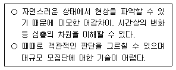
- 참여관찰(participant observation)
- 의사실험(quasi-experiment)
- 내용분석(contents analysis)
- 조사연구(survey research)
(정답률: 알수없음)
57. 다음 질문은 어떤 척도로 되었는가?
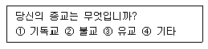
- 서열척도
- 명목척도
- 등간척도
- 비율척도
(정답률: 알수없음)
58. 사회적 거리척도로서 집단간 거리측정이 아니라 집단내 구성원간의 거리를 측정하는데 유용한 방법은?
- 서스톤척도(Thurston Scale)
- 거트만척도(Guttman Scale)
- 소시오메트리(sociometry)
- 보가더스 척도(Bogardus Scale)
(정답률: 64%)
59. 다음 중 우편조사에서 응답률을 높이기 위한 방법으로 가장 옳지 않은 것은?
- 답례품을 제공한다.
- 독촉편지를 발송한다.
- 우표를 붙인 반송용 봉투를 동봉한다.
- 이해관계가 없는 응답자를 표본으로 선정한다.
(정답률: 알수없음)
60. 다음 중 작업가설(working hypothesis)로 적절하지 않은 것은?
- 교육수준이 높을수록 소득이 높을 것이다.
- 21세기 후반에 이르면 서구문명은 몰락하게 될 것이다.
- 계층간 소득격차가 클수록 사회갈등은 심화될 것이다.
- 출산력은 도시보다 농촌에서 더 높을 것이다.
(정답률: 알수없음)
3과목: 사회통계
61. 다음 정규분포의 특성 중 틀린 것은?
- 평균 μ 를 중심으로 좌우대칭이고 분포곡선의 양쪽끝은 급격하게 내려간다.
- 평균값 = 중앙값 = 최빈값의 특성을 갖고, 왜도(skewness)는 0이다.
- 정규분포를 갖는 확률변수(X)에 상수 C를 더해도 X+C는 동일한 정규분포를 갖는다.
- 어떤 확률변수라도 표본수가 충분히 클 때는 표본평균은 근사적 정규분포를 갖는다.
(정답률: 7%)
62. 설명변수(X)와 반응변수(Y)사이에 단순회귀모형을 가정할때, 결정계수는 얼마인가?
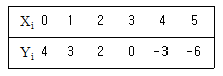
- 0.2⑤
- 0.555
- 0.745
- 0.946
(정답률: 19%)
63. 분석자 A는 자료 A에 대한 단순회귀분석의 결과로
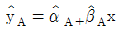
를 얻었고, 분석자 B는 자료 B에 대한 단순회귀분석의 결과로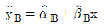
를 얻었다. 그런데 결과적으로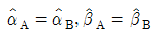
였다고 하자. 그리고 오차분산의 추정값도 같으나 독립변수 X 의 분산이 자료 A보다 자료 B에서 크다고 하자. 다음 중 맞는 것은?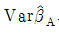
의 추정값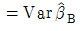
의 추정값 의 추정값
의 추정값 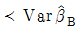
의 추정값 의 추정값
의 추정값 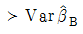
의 추정값- 경우에 따라 다르다.
(정답률: 10%)
64. 모평균의 신뢰구간의 길이를 1/4 로 줄이기 위해선 원래의 표본의 크기를 몇 배로 증가시켜야 하나?
- 1/4 배
- 1/2 배
- 2배
- 16배
(정답률: 알수없음)
65. A, B, C 세 공법에 대하여 다음의 자료를 얻었다. 분산분석을 통하여 위의 세 가지 공법에 유의한 차이가 있는지 검정하고자 할 때, 처리 효과의 자유도는 얼마인가?
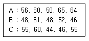
- 1
- 2
- 3
- 4
(정답률: 알수없음)
66. 상자에 파란공이 5개, 빨간공이 4개, 노란공이 3개 들어있다. 이 중 임의로 1개의 공을 꺼낼 때 그것이 빨간공일 확률은?
- 1/3
- 1/4
- 1/5
- 1/6
(정답률: 알수없음)
67. 두 변수 X 와 Y 가 서로 독립일 때 X 와 Y 의 회귀직선의 기울기는?
- 0
- 1
- 0.5
- -1
(정답률: 알수없음)
68. 확률변수 X가 평균이 3이고 분산이 5인 정규분포 N(3, 5)를 따른다고 할 때, 5X+3의 분포는?
- N(3, 25)
- N(18, 125)
- N(18, 5)
- N(15, 125)
(정답률: 알수없음)
69. 아래 내용에 대한 가설형태는?
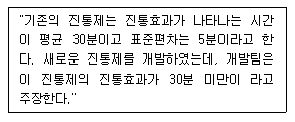
- Ho : μ ＜ 30, H1 : μ ＞30
- Ho : μ = 30, H1 : μ ＜ 30
- Ho : μ ＞30, H1 : μ = 30
- Ho : μ = 30, H1 : μ ≠ 30
(정답률: 알수없음)
70. 모비율 θ 를 추정하고자 크기 n 인 임의표본(확률표본)을 추출하였다.(표본비율 p ) θ 에 관한 신뢰구간의 길이는 n 및 p 와 어떤 관계가 있는가?
- 신뢰구간의 길이는 n 과 관계없다.
- 신뢰구간의 길이는 p 와 관계없다.
- 신뢰구간의 길이는 n 이 커짐에 따라 감소한다.
- 신뢰구간의 길이는 p 가 커짐에 따라 감소한다.
(정답률: 37%)
71. 표본크기를 결정함에 있어 가장 중요하게 고려되어야 할 사항은?
- 모집단의 크기
- 조사대상 지역
- 표본추출방법
- 모집단의 이질성 정도
(정답률: 24%)
72. 다음 중 가설검증에서 영가설(또는 귀무가설)이 허위 일 때 이 영가설이 올바로 기각될 확률을 나타내는 것은?
- α
- β
- 1-α
- 1-β
(정답률: 25%)
73. 확률변수 X의 분산이 9이고 확률변수 Y의 분산이 25일 때, X-Y의 분산은? (단, 확률변수 X와 Y는 서로 독립이라고 가정한다.)
- 16
- 25
- 34
- 72
(정답률: 알수없음)
74. 단순선형회귀모형 y=β0+β1x+ε 에서 n 개의 자료 (x1,y1),…,(xn,yn) 을 고려하자 이때 잔차
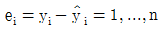
의 성질이 아닌 것은 무엇인가?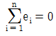
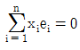
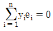
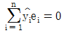
(정답률: 36%)
75. 회귀분석에 있어서 잔차분석은 모형의 적절성 여부에 중요한 역할을 담당한다. 잔차분석 방법 중 Q-Q 그림을 통해 검정할 수 있는 모형의 가정은 무엇인가?
- 선형성
- 등분산
- 정규성
- 독립성
(정답률: 알수없음)
76. 아래 표본에 대하여 중심 측도로서 가장 적합한 것은?
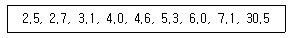
- 4.6
- 4.63
- 7.1
- 7.31
(정답률: 알수없음)
77. 다음 중회귀모형에서 오차분산 σ2 의 추정량은? (단, ei는 잔차이다.)
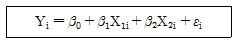
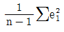
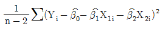
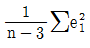
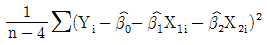
(정답률: 15%)
78. 모평균이 100, 모표준편차가 20인 어느 무한모집단에서 크기 100의 단순임의표본을 얻었다.이 때 표본평균 X의 평균과 표준편차는 얼마인가?
- 평균 = 100, 표준편차 = 2
- 평균 = 1, 표준편차 = 2
- 평균 = 100, 표준편차 = 0.2
- 평균 = 1, 표준편차 = 0.2
(정답률: 알수없음)
79. 두 확률변수의 공분산과 상관계수에 대한 설명으로 틀린 것은?
- 두 확률변수가 서로 독립이면 상관계수는 0 이다.
- 공분산이 0 이면 상관계수는 0 이다.
- 상관계수가 0 이면 두 확률변수가 서로 독립이다.
- 두 확률변수가 서로 독립이면 공분산은 0 이다.
(정답률: 0%)
80. A대학교 학생 전체에서 100명을 임의 추출하여 신장을 조사한 결과 평균이 170이고 표준편차가 10이었다. A대학교 학생 평균 신장의 95%신뢰구간을 구하면? (단, 표준정규분포를 따르는 확률변수 Z는 P(Z＞1.96) = 0.025를 만족한다.)
- (168.04, 171.96)
- (168.14, 171.86)
- (168.24, 171.76)
- (168.34, 171.66)
(정답률: 알수없음)
81. 한 여론조사에서 어느 지역의 유권자 중에서 940명을 임의로 추출하여 연령세대별로 가장 선호하는 정당을 조사한 결과의 이차원 분할표가 다음과 같다. 독립성 검정을 위한 어느 통계소프트웨어의 출력결과에서 유의수 0.⑤에서 검정할 때 올바른 해석은?
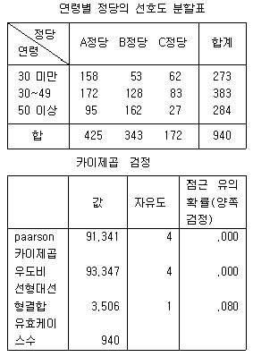
- 카이제곱 통계량에 대한 유의확률이 유의수준보다 작으므로 독립이라는 가설을 기각한다.
- 우도비 통계량에 대한 유의확률이 유의수준보다 작으므로 독립이라는 가설을 기각할 수 없다.
- 카이제곱 통계량이 유의수준보다 크므로 독립이라는 가설을 기각한다.
- 우도비 통계량이 유의수준보다 크므로 독립이라는 가설을 기각할 수 없다.
(정답률: 20%)
82. 5개의 자료 5, 10, 15, 20, 25를 얻었다. 범위는 얼마인가?
- 5
- 10
- 15
- 20
(정답률: 알수없음)
83. 1985년과 1995년의 직종별 임금분산(분포)의 격차를 비교 하려고 한다. 다음 중 어떤 것을 이용하는 것이 가장 바람직한가?
- 변이계수(변동계수)
- 범위
- 사분편차
- 표준편차
(정답률: 알수없음)
84. 통계적 가설검증에서 귀무가설 내용이 옳지만 귀무가설을 기각하고 대립가설을 채택하게 될 확률을 무엇이라 하는가?
- 제1종 오류
- 제2종 오류
- 유의수준
- 귀무가설의 기각확률
(정답률: 10%)
85. 광고비가 매출액에 미치는 영향을 조사하기 위한 통계분석으로 가장 적절한 것은?
- 적합성 검정
- 회귀분석
- 분산분석
- 교차분석
(정답률: 알수없음)
86. 모집단 평균에 대한 가장 좋은 점추정치(point estimate)는?
- 중앙치(median)
- 최빈치(mode)
- 평균편차(average deviation)
- 평균(mean)
(정답률: 25%)
87. 연구자들은 자신의 연구결과가 기존의 가설을 극복하기를 원하기 때문에 통계적 검정력(statistical power)을 높이고자 한다. 다음 중, 통계적 검정력을 높이는 방법이라 할 수 없는 것은 무엇인가?
- 연구조건을 통제하여 모집단의 분산이 작아지게 한다
- 표본의 수를 늘인다.
- 유의 수준을 높인다.
- 충분한 사전 조사를 바탕으로 양측 검정보다는 단측 검정을 한다.
(정답률: 알수없음)
88. 다음 표는 5명의 학생에 대한 국어와 수학 시험의 등수를 조사한 것이다. 이 자료를 보고 국어와 수학의 Spearman의 순위상관계수는 어떻다고 생각되는가?
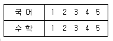
- 매우 높은 음(-)의 상관관계
- 매우 낮은 음(-)의 상관관계
- 매우 높은 양(+)의 상관관계
- 매우 낮은 양(+)의 상관관계
(정답률: 알수없음)
89. 다음 자료는 설명변수(X)와 반응변수(Y)사이의 관계를 알아보기 위하여 조사한 자료이다. 설명변수(X)와 반응변수 (Y)사이에 단순회귀모형을 가정할 때, 회귀직선의 기울기에 대한 추정값은 얼마인가?
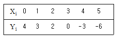
- -2
- -1
- 1
- 2
(정답률: 알수없음)
90. 학생수가 3,000명인 A 고교에서 학생들의 흡연율을 추정하고자 한다. 예비조사로 50명의 학생을 조사한 결과 흡연학생이 20명이었다. 95% 신뢰수준에서 오차한계가 5%이내가 되려면 표본크기는 얼마인가?
- 369명
- 374명
- 329명
- 334명
(정답률: 알수없음)
91. 다음의 자료는 강남과 강북지역을 대상으로 50가구를 추출한 평균연봉(단위:만원)에 대한 통계표이다. 어느 지역이 빈부의 격차가 더 심하다고 볼 수 있는가?
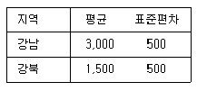
- 강남
- 강북
- 두 지역간에는 빈부의 격차가 나지 않는다.
- 위 자료로는 알수 없다.
(정답률: 알수없음)
92. 다음 중 상관계수의 의미를 잘 나타낸 것은?
- 두 변수간에 차이가 있는가를 나타내는 측도이다.
- 두 변수간의 분산의 차이가 있는가를 나타내는 측도이다.
- 두 변수간의 곡선관계를 나타내는 측도이다.
- 두 변수간의 선형관계를 나타내는 측도이다.
(정답률: 알수없음)
93. 한 나무로부터 추출한 수액의 양은 평균 40L, 표준편차 5L 의 정규분포에 따른다. 1,000그루의 나무에서 수액을 채취한다면 35L 이상 나오는 나무는 대략 몇 그루나 되겠는가? (단, P(-1＜Z＜1)=0.68을 이용하시오.)
- 720그루
- 840그루
- 900그루
- 950그루
(정답률: 31%)
94. 어느 다이어트 프로그램이 효과가 있는지를 연구하려고 9명을 대상으로 프로그램 시행전과 시행후의 체중의 차이 di =시행후의 체중 - 시행전의 체중, i=1,2,…,9를 조사하여
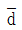
= -0.61 Kg 과 sd = 0.54 Kg를 얻었다. 유의수준 5%에서 귀무가설 H0: μd = 0에 대하여 대립가설H1: μd＜0을 검정하고자 한다. 다음 중에서 틀린 것은?- t통계량은
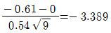
이다. - 자유도는 8이다.
- t＜-t(8,0.⑤) = -1.86이므로 귀무가설은 채택된다. (단, t(v ,α)은 자유도가 v 인 t분포에서 오른쪽 꼬리 부분의 면적이 α가 되는 점이다.)
- 표본의 크기가 커지면 정규분포를 이용할 수 있다.
(정답률: 알수없음)
95. 분포의 모양이 대칭을 벗어나 어느 한쪽으로 기울어진 정도를 나타내는 측도는?
- 평균(mean)
- 분산(variance)
- 왜도(skewness)
- 첨도(kurtosis)
(정답률: 알수없음)
96. 다음 중 상관계수의 범위에 관한 설명으로 올바른 것은?
- 상관계수의 범위는 -1에서 0이다.
- 상관계수의 범위는 0에서 1이다.
- 상관계수의 범위는 1에서 2이다.
- 상관계수의 범위는 -1에서 1이다.
(정답률: 62%)
97. 분산분석에서의 총편차는 처리 내에서의 변동과 처리간의 변동으로 구분된다. 그렇다면 각 수준내에서의 변동의 합을 나타내는 것은?
- 총제곱합
- 처리제곱합
- 급간제곱합
- 잔차제곱합
(정답률: 46%)
98. 분산분석에 관한 설명이다. 옳은 것으로 짝지은 것은?
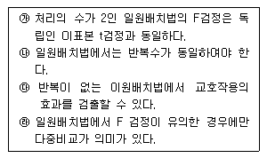
- ㉮, ㉰
- ㉮, ㉱
- ㉯, ㉰
- ㉯, ㉱
(정답률: 알수없음)
99. 어느 중학교 1학년의 신장을 조사한 결과 평균이 136.5㎝, 중앙값은 130.0㎝였다. 신장의 표준편차가 2.0㎝라면 이들 분포에 대한 설명으로 맞는 것은?(오류 신고가 접수된 문제입니다. 반드시 정답과 해설을 확인하시기 바랍니다.)
- 오른쪽으로 기울어진 비대칭분포이다.
- 왼쪽으로 기울어진 비대칭분포이다.
- 정규분포이다.
- 이들 자료로는 알 수 없다.
(정답률: 알수없음)
100. 단순회귀분석에서 회귀선이
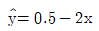
와 같이 주어졌을 때 잘못된 것은?- 반응변수는 y이고 설명변수는 x이다.
- 설명변수가 한 단위 증가할 때 반응변수는 2단위 감소한다.
- 반응변수와 설명변수의 상관계수는 0.5이다.
- 설명변수가 0일 때 반응변수의 예측값은 0.5이다.
(정답률: 알수없음)